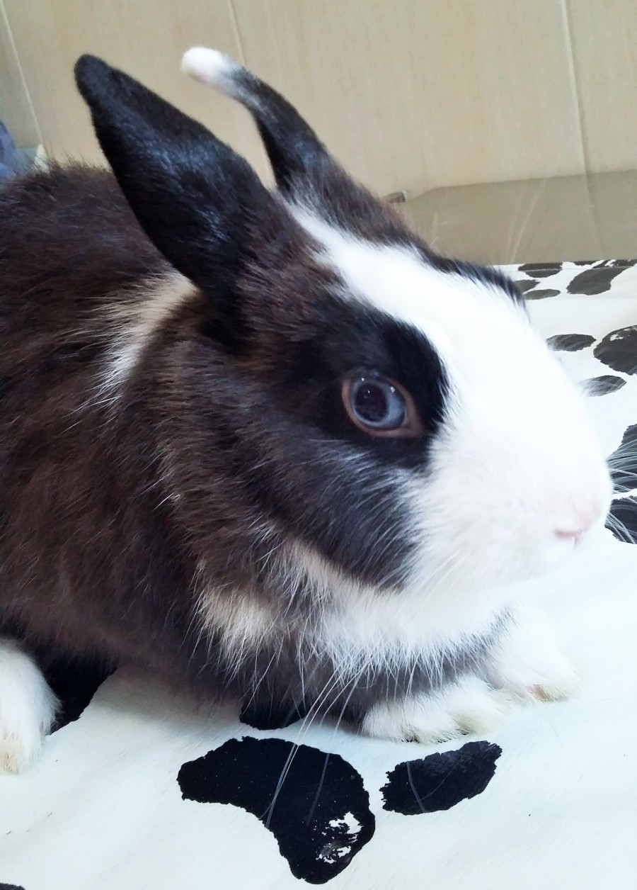

Зайците от декоративните породи са едни от най-разпространените домашни любимци, след кучетата и котките. Те са сравнително лесни за отглеждане животни, но трябва да се имат предвид някои особености на вида.
Зайците са много социални животни и имат нужда да контактуват помежду си. Затова е препоръчително да не се отглеждат сами, а в група от поне два индивида. Оптималната комбинация е женски и кастриран мъжки.
Освен от компания, тези домашни любимци се нуждаят от достатъчно пространство за движение. Затова отглеждането им само в клетка е неподходящо. На всеки заек трябва да се осигурят поне 2-3 квадратни метра място за почивка (най-добре да има и кутия или къщичка от дърво където да се скрие на спокойствие ) и 6-8 часа свободно движение в обезопасеното жилище (помислете за кабелите, които те могат да гризат!).
Бъдещите стопани трябва да са наясно и с друга особеност на своя любимец: зайците са активни и през нощта, поради което вдигат шум и по това време.
Храната на тези животни трябва да е разнообразна и да е на разположение през цялото денонощие, тъй като те се хранят на често и по малко. Основните съставки са сеното и прясната зелена храна – листа от моркови, селъри, спанак, салата, зеленчуци както и малко плодове. Готовата пакетирана храна обикновено е много калорична и затова се дава в малки количества – по 3-4 с.л. на ден. Най-добре е пресните зеленчуци и листа да са био, за да не съдържат пестициди, но дори и те трябва да се измият добре, преди да се дадат на заека.
Друг често пренебрегван факт е, че зайците са много любопитни животни и се нуждаят от интересни за тях занимания, за да не скучаят и да не изпаднат в летаргия. За да направите ежедневието им разнообразно, може да им предоставите „играчки“ като тунелче от картон, кашон със скрити в стените му парчета лакомство или хартиени рула за игра.
Декоративните зайчета не са играчки, не обичат да ги гушкат и затова не са подходящи за игра с малки деца, поради опасността да бъдат наранени както животното, така и детето.
{kind=link}